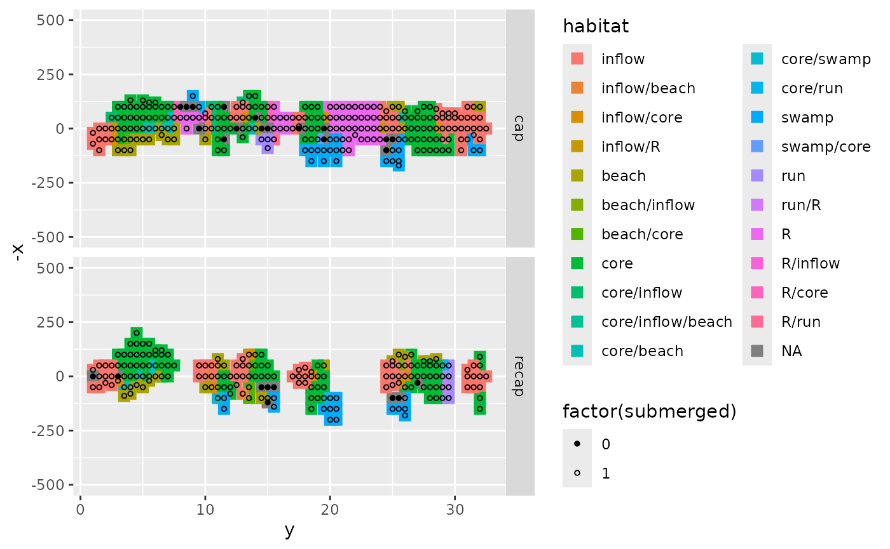
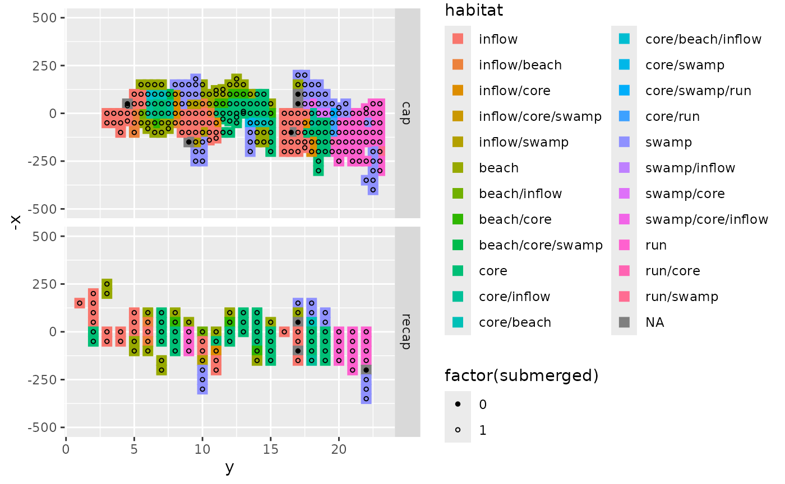
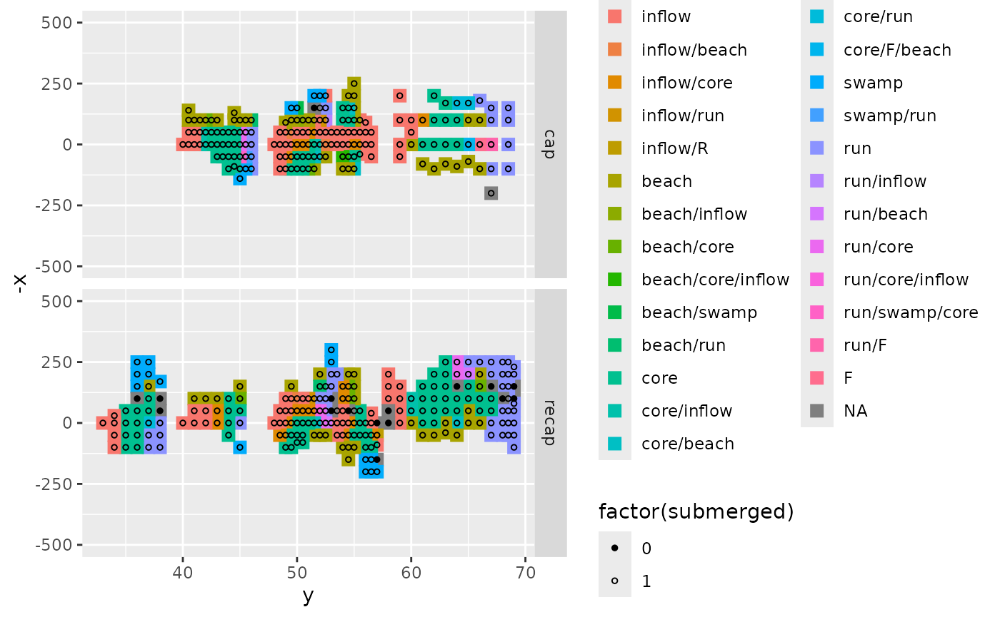
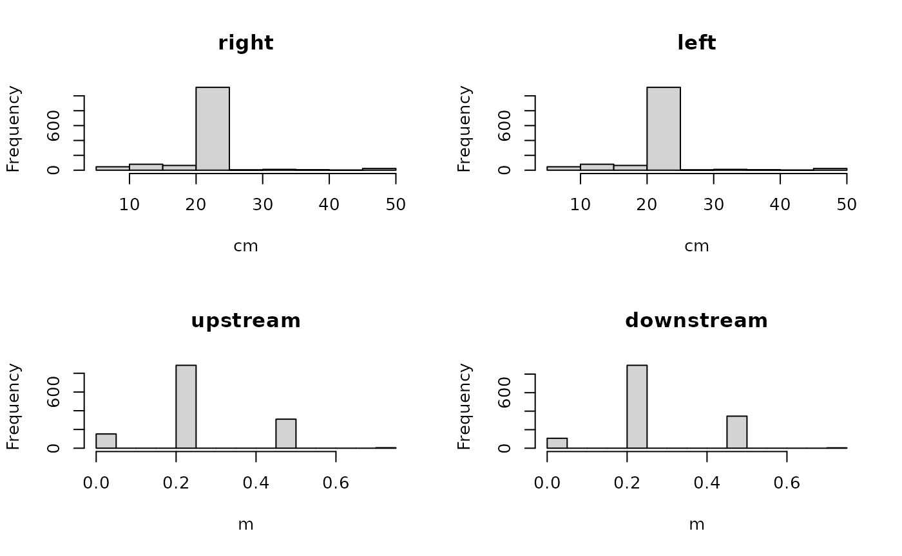
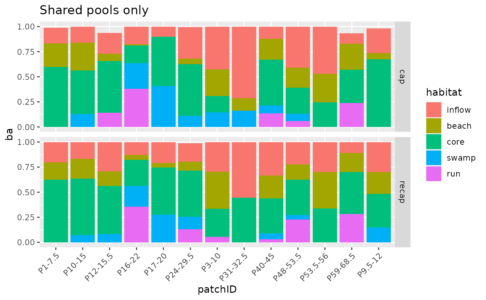

Habitat area
Seba De Bona
DME-015_Habitat_area.RmdOverview & setup
Here we will calculate the relative area of each habitat, in each pool. This will allow us to account for habitat availability when analyzing habitat use.
## ── Attaching core tidyverse packages ──────────────────────── tidyverse 2.0.0 ──
## ✔ dplyr 1.1.4 ✔ readr 2.1.5
## ✔ forcats 1.0.0 ✔ stringr 1.5.1
## ✔ ggplot2 3.5.1 ✔ tibble 3.2.1
## ✔ lubridate 1.9.3 ✔ tidyr 1.3.1
## ✔ purrr 1.0.2
## ── Conflicts ────────────────────────────────────────── tidyverse_conflicts() ──
## ✖ dplyr::filter() masks stats::filter()
## ✖ dplyr::lag() masks stats::lag()
## ℹ Use the conflicted package (<http://conflicted.r-lib.org/>) to force all conflicts to become errors##
## Attaching package: 'magrittr'
##
## The following object is masked from 'package:purrr':
##
## set_names
##
## The following object is masked from 'package:tidyr':
##
## extract
# this vignette requires the package guppyDme to be installed. If the user wishes not to install the package, please comment out the "library(guppyDme)" line and run instead the lines commented out below
#### If you have the guppyDme package installed
# loading package
library(guppyDme)
# # If you do NOT wish to install the guppyDme package, please uncomment and run the following two lines of code, adding the package functions to the Global Environment and loading the data
# source(file.path(here::here(), "R", "package_functions.R"))
# load(file.path(here::here(), "data", "DMEhabitat.rda"))
habitat <- DMEhabitat
str(habitat)## tibble [1,352 × 17] (S3: tbl_df/tbl/data.frame)
## $ stream : chr [1:1352] "CA" "CA" "CA" "CA" ...
## $ streamID : chr [1:1352] "CL1" "CL1" "CL1" "CL1" ...
## $ date : Date[1:1352], format: "2018-03-21" "2018-03-21" ...
## $ reach : chr [1:1352] "P16-22" "P16-22" "P16-22" "P16-22" ...
## $ cap_recap : chr [1:1352] "cap" "cap" "cap" "cap" ...
## $ x : int [1:1352] -50 0 50 100 150 200 250 300 -50 0 ...
## $ y : num [1:1352] 23 23 23 23 23 23 23 23 22.5 22.5 ...
## $ depth : num [1:1352] 0 10.7 9.5 14.8 7.8 6 4.5 1 1 1.5 ...
## $ habitat : chr [1:1352] "E" "E" "E" "E" ...
## $ flow : num [1:1352] NA 0.4 0.6 0.7 0 0.5 0 0 0 0.2 ...
## $ recorded_substrate: chr [1:1352] "rocks" "rock" "rock" "rock" ...
## $ detritus : int [1:1352] 0 0 0 0 0 0 1 0 0 0 ...
## $ leaves : int [1:1352] 0 0 0 0 0 0 0 1 0 0 ...
## $ comments : chr [1:1352] "" "" "" "" ...
## $ substrate : chr [1:1352] "pebbles" "rock" "rock" "rock" ...
## $ submerged : num [1:1352] 1 1 1 1 1 1 1 1 1 1 ...
## $ patchID : chr [1:1352] "P16-22" "P16-22" "P16-22" "P16-22" ...
# for future checks
NROWS <- nrow(habitat)
# as for the cap-recap data, we will consider
# backwaters as habitat D, given the shared properties.
habitat %>%
filter(habitat == "BW")## # A tibble: 8 × 17
## stream streamID date reach cap_recap x y depth habitat flow
## <chr> <chr> <date> <chr> <chr> <int> <dbl> <dbl> <chr> <dbl>
## 1 TY TL 2018-03-25 "B8.5-9 " cap 100 9.5 40 BW 0.1
## 2 TY TL 2018-03-25 "B8.5-9 " cap 150 9 7 BW 0
## 3 CA CL2 2018-04-29 "P33-38.… recap -170 38 8 BW 0
## 4 CA CL2 2018-04-29 "P33-38.… recap -250 37 2 BW 0
## 5 CA CL2 2018-04-29 "P33-38.… recap -200 37 3 BW 0
## 6 CA CL2 2018-04-29 "P33-38.… recap -250 36 16 BW 0
## 7 CA CL2 2018-04-29 "P33-38.… recap -200 36 15 BW 0
## 8 CA CL2 2018-04-29 "P33-38.… recap -150 36 10 BW 0
## # ℹ 7 more variables: recorded_substrate <chr>, detritus <int>, leaves <int>,
## # comments <chr>, substrate <chr>, submerged <dbl>, patchID <chr>
# this only occurs for 2 pools: an actual backwater in TL,
# and a backwater in P33-38.5, which sits between CL1 and CL2
habitat %<>%
mutate(habitat = ifelse(habitat == "BW", "D", habitat))Visualising the streams
The area has to be calculated separately for each stream/capture
event/pool combination. Using tidyr we can group the
dataset and apply the calculations to each of the unique combinations.
To make sure the data for the area we generate here is compatible with
that of the capture-recapture dataset, we will use the shared
patchID variable (generated with the file
reach_key.csv), rather than reach.
# using a nested dataset approach
by_pool <- habitat %>%
select(-reach) %>%
group_by(cap_recap, streamID, patchID) %>%
nest()
head(by_pool$data[[1]])## # A tibble: 6 × 13
## stream date x y depth habitat flow recorded_substrate detritus
## <chr> <date> <int> <dbl> <dbl> <chr> <dbl> <chr> <int>
## 1 CA 2018-03-21 -50 23 0 E NA rocks 0
## 2 CA 2018-03-21 0 23 10.7 E 0.4 rock 0
## 3 CA 2018-03-21 50 23 9.5 E 0.6 rock 0
## 4 CA 2018-03-21 100 23 14.8 E 0.7 rock 0
## 5 CA 2018-03-21 150 23 7.8 E 0 gravel 0
## 6 CA 2018-03-21 200 23 6 E/D 0.5 gravel 0
## # ℹ 4 more variables: leaves <int>, comments <chr>, substrate <chr>,
## # submerged <dbl>To get a better idea of the data, we want to find a way to visualise the distribution on the tiles in the stream. We are here plotting, side to side, the capture and recapture of a stream.
# plotting Taylor LP capture and recapture
# by mistake, the x values for capture are inverted, so we will transform them here
tp <- by_pool %>%
filter(streamID == "TL") %>%
select(data, cap_recap) %>%
unnest(data) %>%
mutate(x = ifelse(cap_recap == "cap", -x, x))## Adding missing grouping variables: `streamID`, `patchID`
# We will replace the letter legend with word-explanations of the habitats
hab_names <- sort(unique(tp$habitat))%>%
str_replace_all(hablab()) %>%
str_replace("beachW", "BW") %>%
c("NA")
ggplot(tp, aes(x = y, y = -x, color = habitat)) +
geom_point(size = 3, shape = 15) +
ylim(-500, 500) +
geom_point(aes(shape=factor(submerged)), size = 1, color="black") +
scale_shape_manual(values = c(19, 1)) +
scale_color_discrete(labels = hab_names) +
facet_grid(cap_recap ~ ., scales = "free")
Between instances the habitat measurments, at least in the case of Taylor Low Predation, were conducetd differently. The recapture only has measurements for the main pools, and avoids riffle areas (for time constraints).
# now plotting Caigual, 1 then 2
c1p <- by_pool %>%
filter(streamID == "CL1") %>%
select(data, cap_recap) %>%
unnest(data)## Adding missing grouping variables: `streamID`, `patchID`
# replacing letter legend with word-explanations
hab_names_c1p <- sort(unique(c1p$habitat))%>%
str_replace_all(hablab()) %>%
str_replace("beachW", "BW") %>%
c("NA")
c2p <- by_pool %>%
filter(streamID == "CL2") %>%
select(data, cap_recap) %>%
unnest(data)## Adding missing grouping variables: `streamID`, `patchID`
# replacing letter legend with word-explanations
hab_names_c2p <- sort(unique(c2p$habitat))%>%
str_replace_all(hablab()) %>%
str_replace("beachW", "BW") %>%
c("NA")
ggplot(c1p, aes(x = y, y = -x, color = habitat)) +
geom_point(size = 3, shape = 15) +
ylim(-500, 500) +
geom_point(aes(shape=factor(submerged)), size = 1, color="black") +
scale_shape_manual(values = c(19, 1)) +
scale_color_discrete(labels = hab_names_c1p) +
facet_grid(cap_recap ~ ., scales = "free")
ggplot(c2p, aes(x = y, y = -x, color = habitat)) +
geom_point(size = 3, shape = 15) +
ylim(-500, 500) +
geom_point(aes(shape=factor(submerged)), size = 1, color="black") +
scale_shape_manual(values = c(19, 1)) +
scale_color_discrete(labels = hab_names_c2p) +
facet_grid(cap_recap ~ ., scales = "free") Similar issues in Caigual.
Calculating habitat areas
The easiest way to calculate relative bethic area of the different habitats in a pool would be to count the size of the grid (50cm2 or 1m2) each time an habitat is recorded in a pool. For shared habitats (e.g. ‘b/c’) the tile size can be divided by how many habitats share it, and that fraction be allocated to all of the habitats involved.
In some streams though the measures on both the x and y axis happen at uneven intervals, seldom exactly 50cm or 1m long. A better alternative then would be, for each point in the grid, to calculate the distance to the point to it’s right, left, upstream and downstream, divide them all by two, add the distances on the two axes (right/2 + left/2 and upstream/2 + downstream/2) and calculate the area of the rectangle having those sides.
We will try with this last approach. We can use the functions
lead() and lag() to obtain points to the right
and left of each grid point. Using group_by() and nest() we can subset
the data into chunks that share the same y value
A combination of map() and mutate() lets us
calculate the semi-distance between each grid point and the point to its
right and left. For the points at the edge of each stream transect, we
will assume the habitat extends towards the edge for an amount that
corresponds to the smallest semi-distance. We are using this measures
because it reflects the smallest half-increment considered in the
measures of that section.
by_y %<>%
# first, arranging each tibble by increasing values of x
mutate(data = map(data, ~.x %>%
arrange(x))) %>%
# then calculating semi-distances along the x axis
mutate(data = map(data, ~ .x %>%
mutate(d.r = abs(x - lag(x))/2,
d.l = abs(x - lead(x))/2,
# and adding semi-distances to edges
d.r = ifelse(length(d.r)>1 & is.na(d.r), min(d.r, na.rm = T), d.r),
d.l = ifelse(length(d.l)>1 & is.na(d.l), min(d.l, na.rm = T), d.l)
)))One operation left to do is to assign semi-distances to grid points that were the only one in a transect. This means they have no neighboring points to calculate a semi-distance from.
by_reach <- by_y %>%
# unnesting and regrouping by reach only
unnest(cols = c(data)) %>%
group_by(cap_recap, streamID, patchID) %>%
nest()
# adding median value to "lonely" grid points
habitat <- by_reach %>% mutate(data = map(data, ~ .x %>%
mutate(d.r = replace(d.r, is.na(d.r), median(d.r, na.rm = T)),
d.l = replace(d.r, is.na(d.r), median(d.r, na.rm = T))
))) %>%
unnest(cols = c(data))
# checking the number of row matches after unnesting
stopifnot(nrow(habitat)==NROWS)We’ve now obtained the values for the semi-distance to left and right; we should do the same for up- and downstream.
In the up- and downstream distance, since the up and downstream boundaries are strict ones, the semi-distance before the upstream-most point and below the downstream-most point will be 0.
whys <- by_y %>%
# trimming away the nested tibbles
select(cap_recap, streamID, patchID, y) %>%
# re-grouping and desting
group_by(cap_recap, streamID, patchID) %>%
nest() %>%
# sorting by values of y
mutate(data = map(data, ~.x %>%
arrange(y))) %>%
# calculating semi-distances on the y axis
mutate(data = map(data, ~.x %>%
mutate(d.d = ifelse(is.na(lag(y)), 0, abs(lag(y)-y)/2),
d.u = ifelse(is.na(lead(y)), 0, abs(lead(y)-y)/2)
))) %>%
unnest(cols = c(data))All is left to do is merging the d.d and d.u values into the habitat dataframe.
habitat <- left_join(habitat, whys, by = c("cap_recap", "streamID", "patchID", "y"))
# check
stopifnot(nrow(habitat)==NROWS)We can now calculate the benthic area of each “tile”” around a grid point. To begin we are checking if there are absurd values for the distances.
par(mfrow = c(2,2))
hist(habitat$d.r, main = "right", xlab = "cm")
hist(habitat$d.l, main = "left", xlab = "cm")
hist(habitat$d.u, main = "upstream", xlab = "m")
hist(habitat$d.d, main = "downstream", xlab = "m")
habitat[which(habitat$d.d==0 & habitat$d.u==0),]## # A tibble: 6 × 21
## # Groups: cap_recap, streamID, patchID [2]
## streamID cap_recap patchID y stream date reach x depth habitat
## <chr> <chr> <chr> <dbl> <chr> <date> <chr> <int> <dbl> <chr>
## 1 TM cap P29-30 29 TY 2018-04-09 P29-30 -80 6 R
## 2 TM cap P29-30 29 TY 2018-04-09 P29-30 -50 6 R
## 3 TM cap P29-30 29 TY 2018-04-09 P29-30 0 6 R
## 4 TM cap R19-20 20 TY 2018-04-09 R19-20 -100 6 R
## 5 TM cap R19-20 20 TY 2018-04-09 R19-20 -50 NA NA
## 6 TM cap R19-20 20 TY 2018-04-09 R19-20 0 6 R
## # ℹ 11 more variables: flow <dbl>, recorded_substrate <chr>, detritus <int>,
## # leaves <int>, comments <chr>, substrate <chr>, submerged <dbl>, d.r <dbl>,
## # d.l <dbl>, d.d <dbl>, d.u <dbl>In two instances the reach is very short (~1m) and defined by only one transect. For this reason both d.u and d.d are set to 0. We will set both to 50 cm here, so that they represent the 1m reach.
We can now move onto calculating the areas. We need to transform the
measures to the same scale. So we’ll divide d.r and
d.l so they are in meters.
The final step is to calculate the relative area of each habitat in each pool. To set up an easy way to deal with shared gridpoints (e.g. a/b/e), we will create a variable that counts by how many habitats a gridpoint is shared.
# creating a variable that defines how many habitats share a grid point
habitat %<>%
mutate(parts = str_count(habitat, "/") + 1)I can now use again a nested dataset approach to calculate the relative and total area of the different habitats.
# creating a custom function to pick out habitats and sum bentic area
add_habitat <- function(data, pattern){
if(pattern == "all"){
data %>%
pull(ba) %>%
sum(na.rm = T)
} else {
data %>%
filter(str_detect(habitat, pattern)) %>%
mutate(ba_parted = ba/parts) %>%
pull(ba_parted) %>%
sum(na.rm = T)
}
}
# applying the function to all habitats of interest. In the process removing
# no habitats (banks and emerged)
by_pool <- habitat %>%
filter(!is.na(habitat)) %>%
group_by(cap_recap, streamID, patchID) %>%
nest() %>%
mutate(A = map(data, add_habitat, "A"),
B = map(data, add_habitat, "B"),
C = map(data, add_habitat, "C"),
D = map(data, add_habitat, "D"),
E = map(data, add_habitat, "E"),
tot = map(data, add_habitat, "all"))
# unnesting
pool_comp <- by_pool %>%
select(-data) %>%
unnest(cols = c(A, B, C, D, E, tot))
# calculating relative areas
pool_comp %<>%
mutate(relA = A/tot,
relB = B/tot,
relC = C/tot,
relD = D/tot,
relE = E/tot)To visualize the composition of each pool we can plot the relative area.
# finding which pools are present before and after
shared_pools <- intersect(pool_comp %>% filter(cap_recap == "cap") %>% pull(patchID),
pool_comp %>% filter(cap_recap == "recap") %>% pull(patchID))
# first, reshaping the dataframe
toplot <- pool_comp %>%
filter(streamID != "TM", str_sub(patchID, 1, 1)=="P") %>%
select(-c(A, B, C, D, E, tot)) %>%
rename(A=relA, B=relB, C=relC, D=relD, E=relE) %>%
gather(A, B, C, D, E, key = habitat, value = ba)
# # Displaying all pools (no riffles)
# ggplot(toplot, aes(x = patchID, y = ba, fill = habitat)) +
# geom_bar(stat = "identity") +
# facet_grid(cap_recap ~., scales = "free") +
# scale_fill_discrete(labels = hablab()) +
# theme(axis.text.x = element_text(angle = 45, hjust = 1)) +
# ggtitle("All pools")
# We can now display only the shared pools between capture and recapture
ggplot(toplot %>% filter(patchID %in% shared_pools),
aes(x = patchID, y = ba, fill = habitat)) +
geom_bar(stat = "identity") +
facet_grid(cap_recap ~., scales = "free") +
scale_fill_discrete(labels = hablab()) +
theme(axis.text.x = element_text(angle = 45, hjust = 1)) +
ggtitle("Shared pools only")
There are a few pools with a chunk of the percentage missing. That’s
due to the presence of either a boundary in common with a riffle or to
some weird habitat (such as F in P59.68.5) that yield no
guppies.